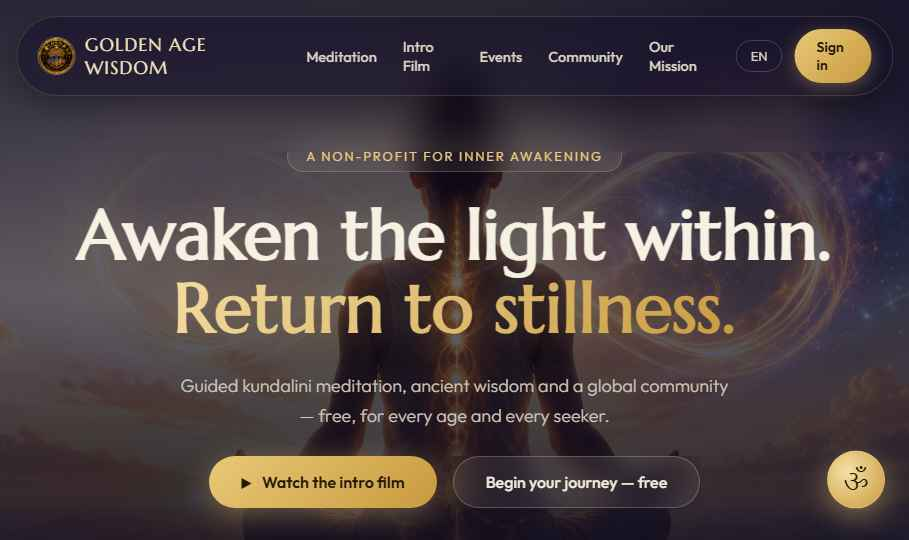
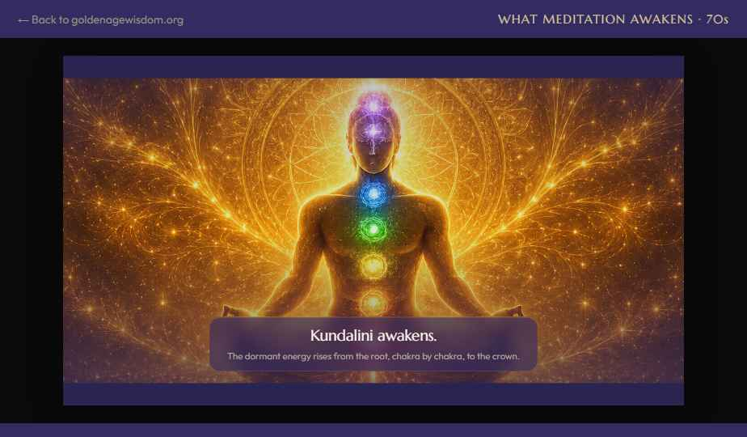
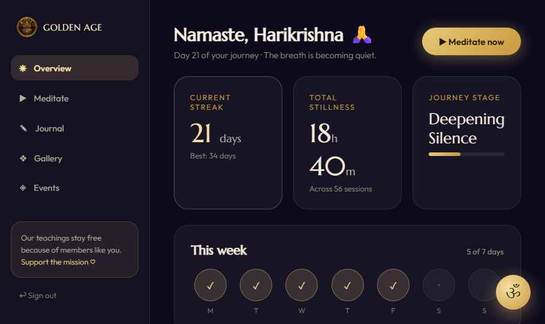
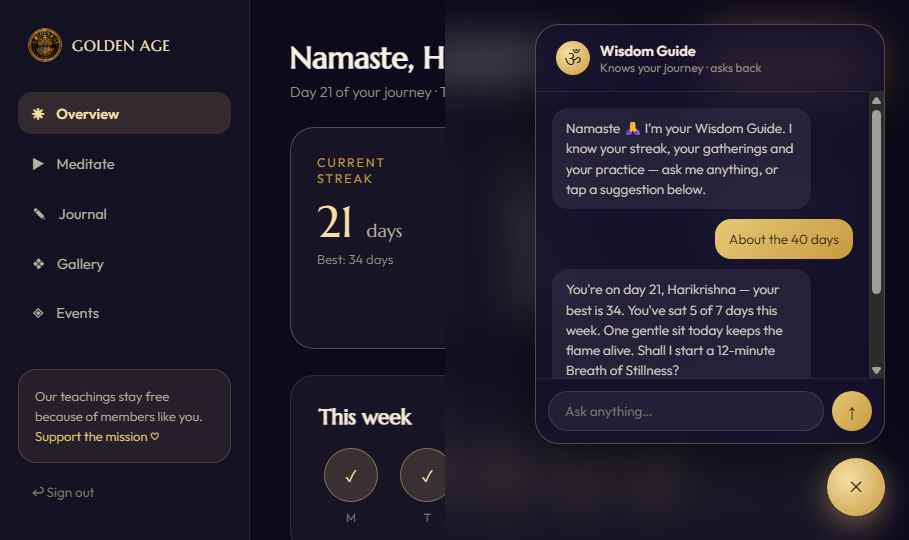
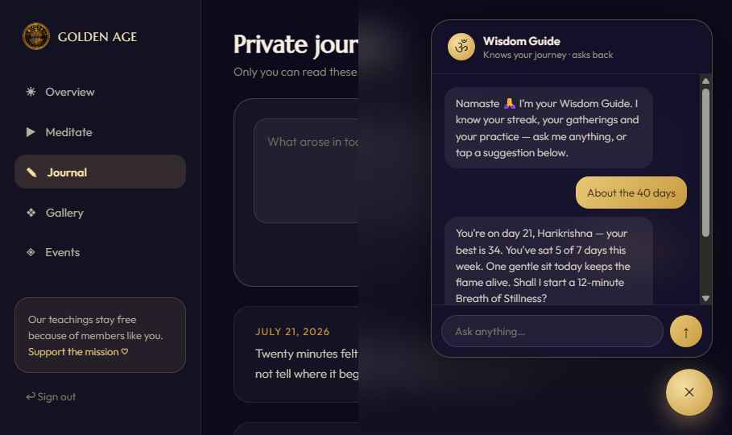

New public site · cinematic intro film · secure member area

1 · A seeker lands on the homepage
Golden cosmic design, the mission, and one clear call: begin your journey.

2 · They watch the 70-second intro film
Silence → breath → sahasrara → kundalini → Satya Yugam, with score and narration.
3 · One-tap sign up
Google, Facebook or Apple — OAuth 2.0, no passwords stored, encrypted data.

4 · The dashboard tracks their journey
Streak, weekly sits, journey stage — and one button to meditate now.
The 40-day challenge
40days
A 30-minute sit in silence, every day. No kriyas, no breath techniques — close your eyes and watch the breath. Then see how well you act, and how deeply mind and body heal.

5 · Questions? The Wisdom Guide answers
It explains meditation experiences, shares reference videos, and knows their journey.

6 · Private journal & photo gallery
Encrypted entries after each sit; photos from gatherings, safely uploaded.